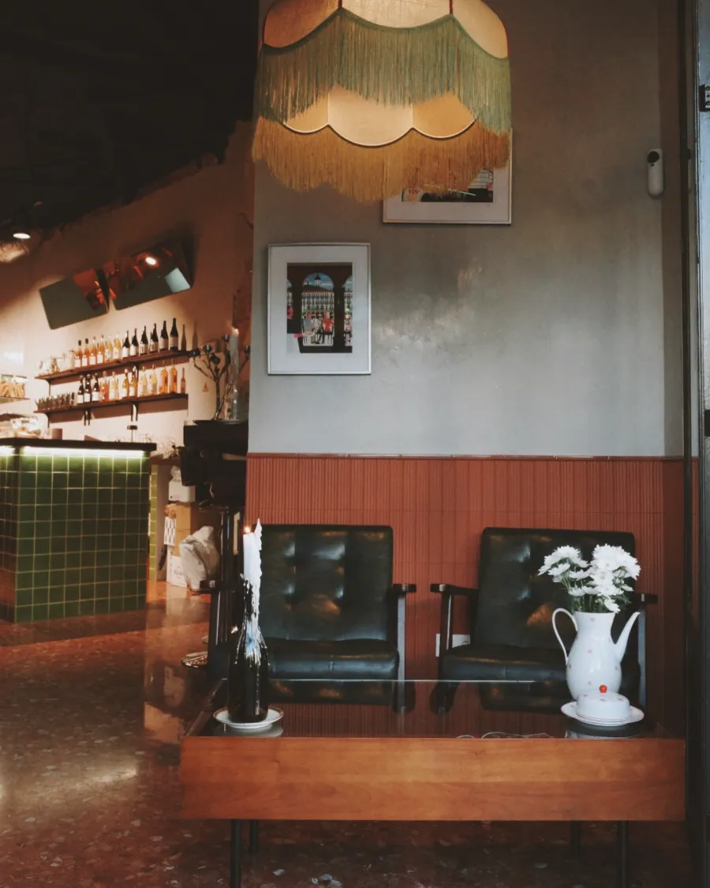
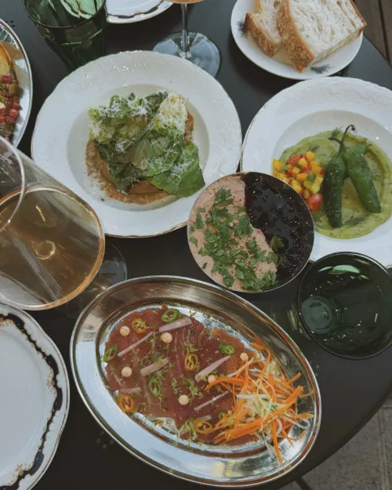
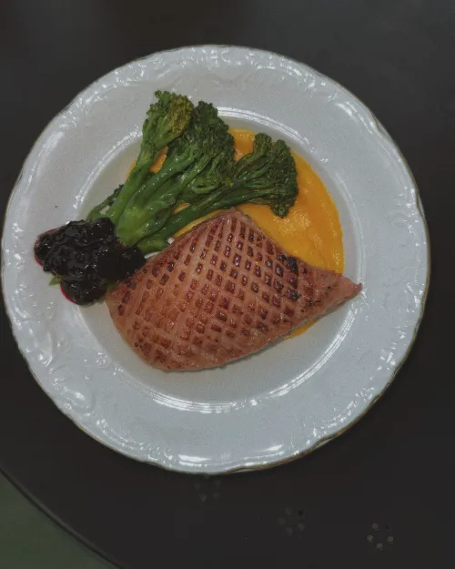
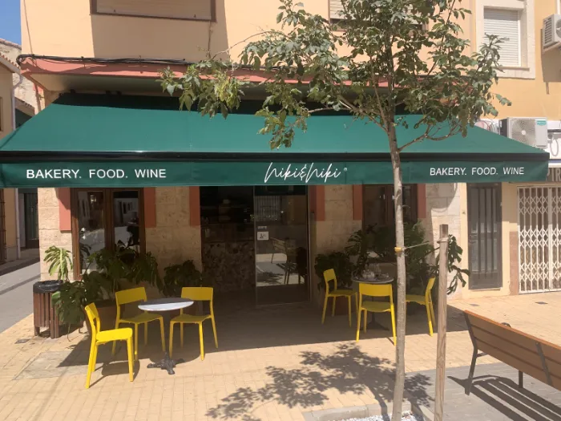

Niki & Niki · Moraira
De la mañana a la noche, en la Av. de la Paz.
Panadería y café por la mañana, como en Dénia. De miércoles a domingo, además, cocina de noche con platos para compartir y vino natural. Puedes reservar mesa en la barra o en la terraza.
Lun–mar 8:00–15:30 · mié–dom 8:00–22:00, cocina de noche desde las 16:00
Lun–mar 8:00–15:30 · mié–dom 8:00–22:00, cocina de noche desde las 16:00

Por la mañana
Hojaldre, masa madre y café de especialidad, como en Dénia.
Abrimos todos los días a las 8:00, con bollería, pan de masa madre y desayunos como los huevos turcos o la shakshuka.
La carta de la web es la de Dénia. En Moraira puede variar: pregúntanos.
«El café está muy bueno […] y la bollería también nos encantó.»
Reseña en Google de Moraira
Lo más mencionado en Moraira
Moraira · mié–dom · 16–22 h
Cuando cerramos en Dénia, se encienden las luces en Moraira.
Platos para compartir, hechos casi enteros desde cero, y vino natural. De miércoles a domingo, de 16:00 a 22:00.
Este otoño, de la cocina de noche
Pechuga de pato con puré de azafrán, brocolini y mermelada de grosella negra · lechuga romana a la brasa sobre tahini · paté de hígado de pollo con grosella negra · carpaccio de atún · guacamole con pimientos de Padrón · gildas de anchoa · curry a la española con patata y sobrasada · y nuestro pan de masa madre con mantequilla batida.
Platos que hemos compartido en Instagram en octubre. La carta cambia: pregúntanos qué hay hoy.


Visítanos
En la Av. de la Paz, en el centro de Moraira.
- Dirección
- Av. de la Paz, 4
03724 Moraira (Alicante) - Horario
- Lun–mar 8:00–15:30 · mié–dom 8:00–22:00, cocina de noche desde las 16:00
- Teléfono
- 625 02 63 00 · @nikiniki.bakery
Bueno saber
- Reserva online en barra o terraza
- Vino natural por copas
- Bebida de avena para el café
- Acceso para silla de ruedas

También en Dénia
Todos los días, junto al puerto de Dénia.
En la Plaça Fontanella: desayunos, brunch, panadería y encargos, de 8:00 a 17:00.